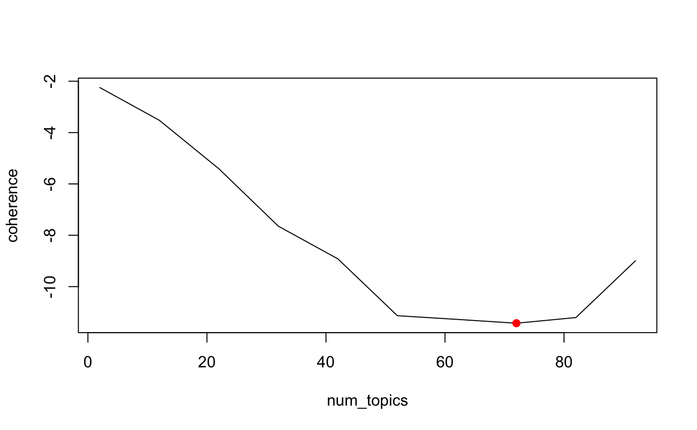

coherence.RmdThis is a reproduction of the official tutorial on Topic coherence.
We will be using the u_mass and c_v coherence for two different LDA models: a “good” and a “bad” LDA model. The good LDA model will be trained over 50 iterations and the bad one for 1 iteration. Hence in theory, the good LDA model will be able come up with better or more human-understandable topics. Therefore the coherence measure output for the good LDA model should be more (better) than that for the bad LDA model. This is because, simply, the good LDA model usually comes up with better topics that are more human interpretable.
As stated in table 2 from this paper, this corpus essentially has two classes of documents. First five are about human-computer interaction and the other four are about graphs. We will be setting up two LDA models. One with 50 iterations of training and the other with just 1. Hence the one with 50 iterations (“better” model) should be able to capture this underlying pattern of the corpus better than the “bad” LDA model. Therefore, in theory, our topic coherence for the good LDA model should be greater than the one for the bad LDA model.
library(gensimr)
data("corpus", package = "gensimr")
texts <- prepare_documents(corpus)
#> → Preprocessing 9 documents
#> ← 9 documents after perprocessing
dictionary <- corpora_dictionary(texts)
corpus_bow <- doc2bow(dictionary, texts)
tfidf <- model_tfidf(corpus_bow, id2word = dictionary)
corpus_tfidf <- wrap(tfidf, corpus_bow)We’ll be setting up two different LDA Topic models. A good one and bad one. To build a “good” topic model, we’ll simply train it using more iterations than the bad one. Therefore the u_mass coherence should in theory be better for the good model than the bad one since it would be producing more “human-interpretable” topics.
good_lda_model <- model_lda(corpus = corpus_tfidf, id2word = dictionary, iterations = 50L, num_topics = 2L)
bad_lda_model <- model_lda(corpus = corpus_tfidf, id2word = dictionary, iterations = 1L, num_topics = 10L)As we will see below using LDA visualization, the better model comes up with two topics composed of the following words:
good_lda_model:
bad_lda_model:
Therefore, the topic coherence for the good\_lda\_model should be greater for this than the bad\_lda\_model since the topics it comes up with are more human-interpretable. We will see this using u_mass and c_v topic coherence measures.
good_cm <- model_coherence(model = good_lda_model, corpus = corpus_tfidf, dictionary = dictionary, coherence = 'u_mass')
bad_cm <- model_coherence(model = bad_lda_model, corpus = corpus_tfidf, dictionary = dictionary, coherence = 'u_mass')good_cm$get_coherence()
#> -14.664627001047737
bad_cm$get_coherence()
#> -14.675685140359779From the R console once can use the plot function to interactively open the visualisation.
vis <- prepare_ldavis(good_lda_model, corpus, dictionary)
# plot(vis)
save_ldavis_html(vis, "lda.html")
htmltools::includeHTML("lda.html")good_cm$get_coherence()
#> -14.664627001047737
bad_cm$get_coherence()
#> -14.675685140359779good_cm <- model_coherence(model = good_lda_model, texts = texts, dictionary = dictionary, coherence = 'c_v')
bad_cm <- model_coherence(model = bad_lda_model, texts = texts, dictionary = dictionary, coherence = 'c_v')good_cm$get_coherence()
#> 0.38384135537372027
bad_cm$get_coherence()
#> 0.38384135537372027Hence as we can see, the u_mass and c_v coherence for the good LDA model is much more (better) than that for the bad LDA model. This is because, simply, the good LDA model usually comes up with better topics that are more human interpretable. The bad_lda_model however fails to decipher between these two topics and comes up with topics which are not clear to a human. The u_mass and c_v topic coherences capture this wonderfully by giving the interpretability of these topics a number as we can see above. Hence this coherence measure can be used to compare difference topic models based on their human-interpretability.
## Map
You can also apply the model_coherence to multiple models at once using map_coherence.
# create a model collection
models <- list(good_lda_model, bad_lda_model)
(model_collection <- as_model_collection(models))
#> ℹ A collection of 2 models.
# compute topic coherence
model_collection <- map_coherence(model_collection, corpus = corpus_tfidf, dictionary = dictionary, coherence = 'u_mass')
get_coherence_data(model_collection)
#> # A tibble: 2 x 3
#> num_topics coherence coherence_model
#> <int> <dbl> <list>
#> 1 2 -14.7 <gns...CM>
#> 2 10 -14.7 <gns...CM>In the real world you will likely use the map_* functions to run and assess multiple models at once then assess which is best using the perplexity score. Here we use the reuters dataset from the textanalysis package as a larger corpus helps to better demonstrate. The reuters package is a set of reuters articles on 10 different commodities.
# remotes::install_github("news-r/textanalysis")
data("reuters", package = "textanalysis")
# preprocess the reuters dataset
texts <- prepare_documents(reuters$text)
#> → Preprocessing 1045 documents
#> ← 1045 documents after perprocessing
dictionary <- corpora_dictionary(texts)
corpus_bow <- doc2bow(dictionary, texts)
tfidf <- model_tfidf(corpus_bow, id2word = dictionary)
corpus_tfidf <- wrap(tfidf, corpus_bow)
# train multiple models
models <- map_model(
corpus = corpus_tfidf,
id2word = dictionary
)
# compute topic coherence of all models
models <- map_coherence(models, corpus = corpus_tfidf, dictionary = dictionary, coherence = 'u_mass')
get_coherence_data(models)
#> # A tibble: 10 x 3
#> num_topics coherence coherence_model
#> <int> <dbl> <list>
#> 1 2 -2.25 <gns...CM>
#> 2 12 -3.52 <gns...CM>
#> 3 22 -5.41 <gns...CM>
#> 4 32 -7.65 <gns...CM>
#> 5 42 -8.92 <gns...CM>
#> 6 52 -11.1 <gns...CM>
#> 7 62 -11.3 <gns...CM>
#> 8 72 -11.4 <gns...CM>
#> 9 82 -11.2 <gns...CM>
#> 10 92 -8.99 <gns...CM>
plot(models)
Coherence closer to 0 is better.